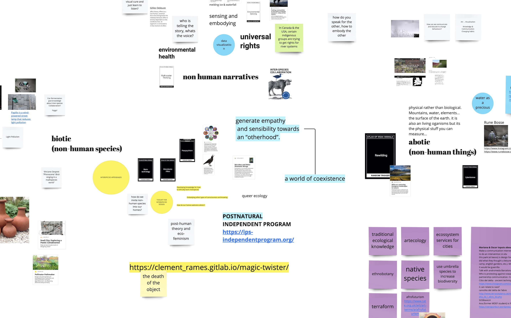
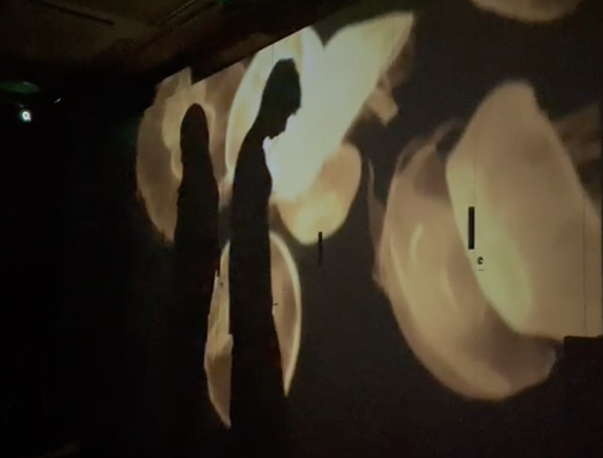
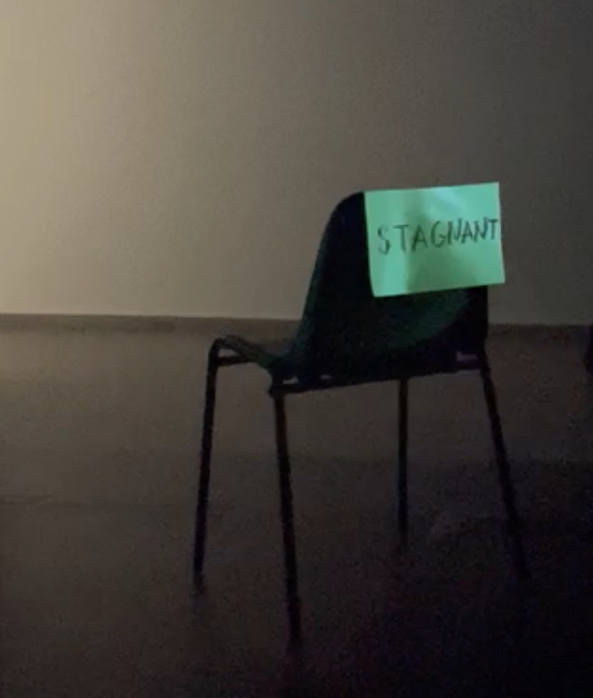
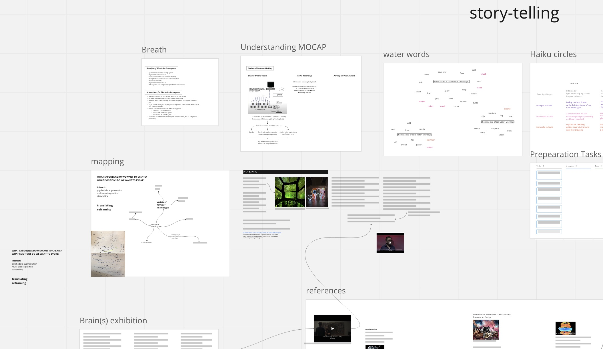

collective interventions¶
know thy (non-human) neighbors at river besós¶
with Myrto, Paige and Carolina
together we were trying to bring together our manifold interests around interspecies design processes. what are the biotic and abiotic actors that should be included in thought about past, present, and future? how can we provide space to them during collaboration? we choose an aquatic urban area to find out in how far here, at the riverside, the human and non-human collate. the river Besós is essential is the provision of drinking water to the Barcelonian water-infrastructure and in a similar way serves as a drainage for all the waste-water created after their usage. we were interested in giving (back) a voice to the water that seemed to us disrespectfully treated. we came, equipped with cameras and microphones to capture the interdependencies of human and non-human. we walked barefoot in and around the riverbed, there were construction-works going on, we found remnants of animals and plants, of toilets and plastics. since the 1960s the river Besós area suffers from pollution and degradation, mostly due to abandonment and industrialization of the surrounding areas. in 1995 an environmental recovery of the river was initiated, which resulted with the Parque Fluvial del Besòs in 2004: a long public green area with space to walk, cycle and practice outdoor sports. We develop our collective design space in a miro, here a screenshot if the access does not work

augmented creativity in (non) virtual fictions¶
with Myrto, Paige, Carolina, Mariana and Çağsun
as a collective we are researching the possibility to extend our human perspectives to more-than-human ontologies. we will use our inherent subjectivity to create a methodology that enables participants to established bonds with the more-than-human.
on Friday 02.12 we invited three non-related persons to join us in the Motion Capture room of Elisava for a perspective-widening experience.
we are searching to create a protocol, a guide, a toolkit for people to embody non-human characteristics, elements in order to afterwards be more fertile to more-than-human design processes. We try to facilitate the embodiment of water, not forcing to leave a human body, we try to stimulate rather than ask for action.
we are preparing participants to engage with the research question: what does water want in the domestic space?
how can our specific water case study be applied to different non-human collaborations?


also during this collaboration we develop our collective design space in a miro where we share references, ideas and events…
